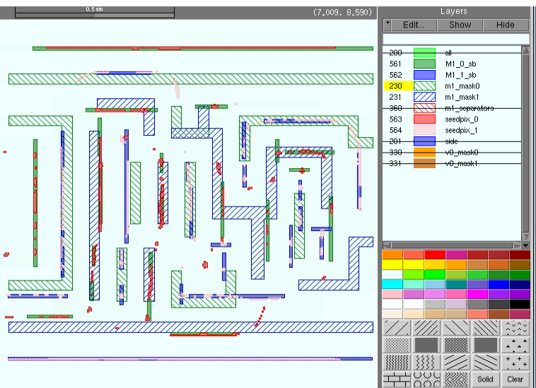

You
can set a variety of options within the RET Flow Tool for analysis.
Procedure
- In Calibre WORKbench, click
the Options button as shown in Figure 1. The illustration shows that Calibre
nmSRAF has been enabled and outputs the selected layers.
This form allows you to specify
different types of information to output any iteration of the SRAF
generation run, including gradient maps, debug layers, and SRAF. Only
the visible region is simulated and written to the selected layers.
- You can set the initial output
layer number in the Output Layer(s) Options section. The output
layers are incremented by 1 for each new output layer per iteration
produced.
- Click SRAF in
this form to assert the options and run nmSRAF.
Figure 2. Example Output From
OPC Run Options for cnSRAF
These are several output layers produced by
the mbsraf run. Layers 100 through 109 were generated in the initial
run. Layers above 500 are the layers generated by the RFT-based
mbsraf run. They include the initial seed pixels (red and pink,
respectively) and final model-based SRAF (green and blue, respectively).
Masks 0 and 1, with their respective SRAFs, are shown for clarity
with two illustrations in Figure 3:
Figure 3. Layers Generated by the mbsraf Run
Results
You have generated
model-based SRAF and the selected gradient maps for metal layer. You
ran the mbSRAF engine within the RET Flow Tool.